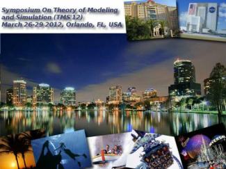
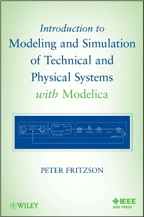
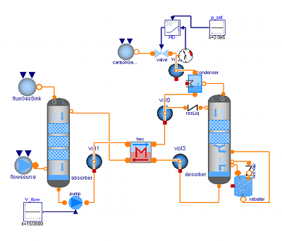
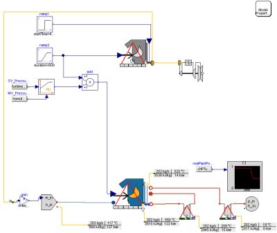
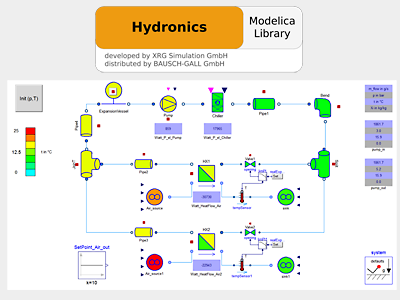
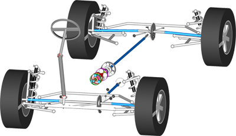
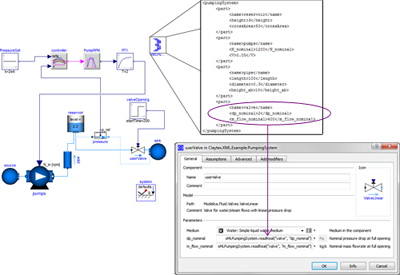
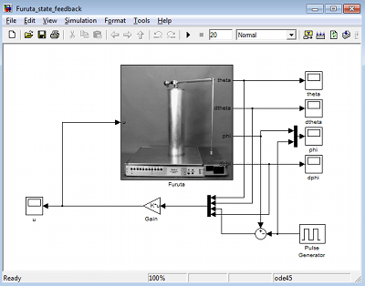
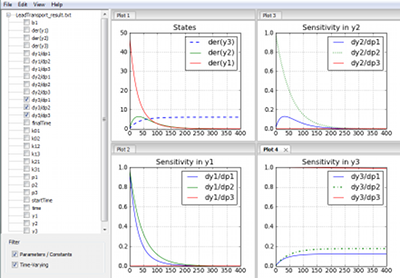
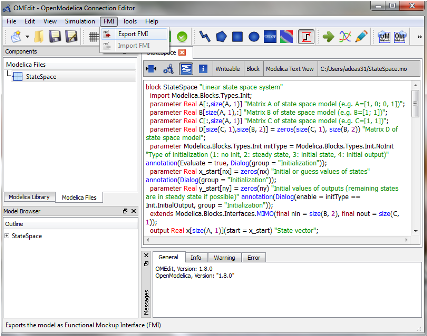

Modelica Newsletter 2011-2
Newsletter #2 of 2011 (News from Modelica Association, from Modelica related projects and from Modelica tool vendors)
Table of Contents
- Letter from the Board
- Educational News
- CFP: Workshop on Model-driven Approaches for Simulation Engineering
- CFP: OpenModelica and MODPROD Workshops
- New Short Introductory Modelica Book
- Bausch-Gall Training Courses
- Modelon Training Courses
- Modelica Tutorial in Denver, USA
- Project News
- Optimal Control of Carbon Capture Processes
- DynCap - Modelling and Simulating the Dynamics of CO2 Capture
- Library News
- Hydronics Library - Version 1.9 Released
- PTDynamics Library released by Claytex
- Modelica XML Reader from Claytex
- Belts Library - Version 3.2.1 Released
- Vendor News
Letter from the Board
As a slight change from the normal "Letter from the Board", we thought it would be interesting to present some statistics related to the Modelica web site. Most people who are interested in the Modelica effort know others in the community. But who are the users of Modelica and where do they come from?
Visitors
According to our logs, there were over 310,000 page views so far in 2011. Furthermore, we had over 86,000 visitors (about 45,000 of them unique) to the web site. That works out to about 300 visits per day spending an average of slightly more than 3 minutes on the site. All of these numbers are collected from actual browser views, so it should exclude "spiders" and other web crawling technologies.
Geography
Just about 25% of visitors are from Germany. After Germany, we have about 12.5% from the US and 9.28% from France. Rounding out the top 10 we have Sweden, Japan, Italy, UK, China, Spain and Austria. Even so, these 10 still represent less than 75% of visitors. The Modelica effort is clearly grabbing the attention of people around the world.
At least as interesting as where visitors came from is where the new visitors are coming from. Why? Because this tells us where Modelica interest is growing.
First, we need to filter out those countries with only a few hits because they skew the data. So let's filter out any countries with fewer than 200 visitors per year. In this case, the top five countries with the highest percentage of new visitors are: Argentina, Mexico, Greece, India and Turkey. If we restrict ourselves even further to countries with more than 1000 visitors so far this year, the top five with the highest percentage of new visitors are: India, Italy, United States, Spain and Canada.
Platform
84% of our visitors are running the Windows Operating System. Linux visitors are 9% of total visits followed by Mac users which are 5%. Almost all of the remaining 2% are from mobile devices of some kind.
About 45% of our visitors view the site with Firefox. The second most common browser is Internet Explorer with 29%. These are followed by Chrome, Opera and Safari with 17%, 4% and 4%, respectively.
Source and Content
55.6% of the visitors to our site are coming from search engines and over 97% of those coming from Google. Of the remaining, about 20% are coming from referring sites. The top referring site is Wikipedia (English) which accounts for about 10% of referrals followed closely by 3ds.com (Dassault Systèmes) at 8.5%. The sites openmodelica.org and Wikipedia (German) each account for about 5% of the referrals. From there we have a "long tail" of approximately 900 sites that include directly links back to modelica.org.
Now that we know how they find us, the last remaining question is what are they looking at? Of course, the majority of hits (around 20%) are people who look at the from page. Many of those people probably didn't know what Modelica was and just took a casual glance. The remaining top 5 (in terms of page views) are:
- /tools: 13%
- /libraries: 12.5%
- /documents: 6.6%
- /publications: 5.7%
But page views don't tell the whole story. What topics do people spend the most time on? The answer is tools, Modelica Standard Library and publications.
Finally, what makes people want to dig deeper? In other words, what topics cause them to click through to other pages on the site? Of pages that got more than 2000 page views in 2011, the things that are most likely to cause people to keep reading are information related to events (papers, etc), the Modelica license, How-To documentation and the main library page.
Conclusion
In summary, the Modelica web site looks like it will serve 400,000 page views this year to about 58,000 unique visitors in over 140 countries. I hope you've found this glimpse into the Modelica association analytics interesting. Of course we hope to see these numbers continue to grow in the future.
Martin Otter, Chairman (DLR Germany)
Peter Fritzson, Vice-Chairman (Linköping University, Sweden)
Michael Tiller, Secretary (Dassault Systèmes, U.S.A.)
Hilding Elmqvist, Treasurer (Dassault Systèmes, Sweden)
Educational News
CFP: Workshop on Model-driven Approaches for Simulation Engineering

Call for Papers: 2nd International Workshop on Model-driven Approaches for Simulation Engineering, part of the Symposium on Theory of Modeling and Simulation (SCS SpringSim 2012)
The workshop aims to bring together experts in model-based, model-driven and software engineering with experts in simulation methods and simulation practitioners, with the objective to advance the state of the art in model-driven simulation engineering.
March 26-29, 2012, Orlando, FL (USA)
Papers Due: November 15, 2011
A non–exhaustive list of topics of interest includes:
- model-driven technologies for simulation verification and validation
- model-driven technologies for data collection and analysis
- model-driven technologies for simulation visualization
- Executable UML
- Executable Architectures
- SysML / Modelica integration
- Simulation Model Portability
- Model-based systems verification and validation
- Simulation for model-based systems engineering
- model-driven simulation engineering processes
- requirements modeling for simulation
- domain specific languages for modeling and simulation
- model transformations for simulation model building
- model transformations for simulation model implementation
- model-driven engineering of distributed simulation systems
- relationship between metamodeling standards (e.g., MOF, Ecore) and distributed simulation standards (e.g., HLA, DIS)
- metamodels for simulation reuse and interoperability
- model-driven technologies for different simulation paradigms (discrete event simulation, multi agent simulation, sketch-based simulation, etc.)
- model-driven methods and tools for performance engineering of simulation systems
- simulation tools for model-driven software performance engineering
Accepted papers will be published in the conference proceedings and archived in the ACM Digital Library, IEEE Xplorer and IEEE CS Digital Library. The Symposium is co-sponsored by IEEE.
For further details, please refer to http://www.sel.uniroma2.it/Mod4Sim12
Contact Information
Daniele Gianni and Nicolas Rouquette (workshop co-chairs)
Emails: daniele.gianni@esa.int and nicolas.f.rouquette@jpl.nasa.gov
This article is provided by Daniele Gianni (European Space Agency)
CFP: OpenModelica and MODPROD Workshops
Location: Linköping University, Sweden
- 6th MODPROD Workshop on Model-Based Product Development, Feb 7-8, 2012
- 4th OpenModelica Annual Workshop, Feb 6, 2012
Keynotes for MODPROD Workshop
- Edward Lee, Professor at UC Berkeley, CA, USA; Director of the Ptolemy project on Embedded System Multi- Paradigm Modeling at UC Berkeley
- Keynote, John Baras, Professor at University of Maryland, Washington DC, USA; Director of the Institute for Systems Research at University of Maryland.
The workshops are concerned with, but not limited to, the following themes:
| MODPROD Workshop | OpenModelica Annual Workshop |
|---|---|
|
|
For more information, see www.openmodelica.org and www.modprod.liu.se .
This article is provided by Peter Fritzson (Linköping University)
New Short Introductory Modelica Book

The new short introductory book “Introduction to Modeling and Simulation of Technical and Physical Systems” by Peter Fritzson is aimed at teaching Modelica modeling and simulation to beginners, or in courses where there is only limited time for an introduction to Modelica. However, if you already have the big book “Principles of Object-Oriented Modeling and Simulation with Modelica 2.1”, you will probably not need the new book, except for teaching introductory courses.
The book is 232 pages, provides downloadable exercises and solutions available at www.openmodelica.org, and uses the Modelica language standard version 3.1.
Additional information and ordering possible evaluation copies are available HERE.
Title: Introduction to Modeling and Simulation of Technical and Physical Systems with Modelica
by: Peter Fritzson
ISBN: 978-1-1180-1068-6
Paperback, 232 pages
September 2011, Wiley-IEEE Press
This article is provided by Peter Fritzson (Linköping University)
Bausch-Gall Training Courses
BAUSCH-GALL GmbH offers the following training classes in German language either in our office or at your site:
- Next 2-day training course Dymola and Modelica in our office, next date in spring 2011
- Next 1-day introduction to Dymola and Modelica in our office on November 14, 2011
- Next 1-day Modelica and SimulationX in our office, next date in spring 2011
- Next 1-day Usage of SimulationX in our office, next date in spring 2011
Information about training courses of BAUSCH-GALL GmbH. All classes are also offered at your location. Please ask for conditions.
This article is provided by Ingrid Bausch-Gall (BAUSCH-GALL GmbH)
Modelon Training Courses
Modelon offers a wide range of standardized courses on regular basis in Sweden, Germany and the US:
- Dymola Introduction: A five day course that gives you a flying start with Dymola and Modelica, can be taken all at once or divided into two blocks of three and two days respectively.
- Modelica Introduction: A three day course that teaches the language constructs of Modelica, and how to use them to solve engineering problems. Tool independent.
- Introduction courses for our commercially available libraries.
- Mechanics Modeling: A one day course that gives a comprehensive introduction in how to build mechanical models in Modelica. Based on the Modelica Standard Library.
- Thermofluid Modeling: A one day course on how to efficiently represent thermo fluid systems with Modelica. Based on the Modelica Standard Library.
Additionally we are giving on-site customer courses that can be tailored to fit specific needs. Our instructors are fluent in Swedish, English, German, and French.
This article is provided by Johan Andreasson (Modelon AB)
Modelica Tutorial in Denver, USA
Dr. Michael Tiller from Dassault Systèmes SA will be presenting a 3 part tutorial at the National Defense Industry Association's Physics-Based Modeling in Design and Development for U.S. Defense Conference. Each part will be 1 hour and 45 minutes long and will cover increasingly in-depth topics related to Modelica.
The conference will be held at the Hyatt Regency Tech Center in Denver, Colorado, USA from November 14th-17th. The Modelica tutorial will be at 8:00 a.m. on November 14th in "Grand Mesa D". Complete information about the tutorial can be found here.
This article is provided by Michael Tiller (Dassault Systèmes)
Project News
Optimal Control of Carbon Capture Processes

Modelon has successfully completed a research project funded by the Swedish agency for research and innovation for sustainable growth, Vinnova. The goal of the project was to develop models and methods for non-linear model based control (NMPC) for amine based post combustion capture plants. First, detailed dynamic models of the absorption and desorption processes were developed and validated against measurement data from the EU-project Cesar. In a second step, physics-based model reduction was performed to obtain models that can be optimized in real-time. Both model types are available in a commercially supported model library from Modelon. JModelica.org was used for solving the dynamic optimization problems arising in NMPC, and has been demonstrated to be capable of optimizing a reasonably complex dynamic model (with more than 50 states) in a sample time that is adequate for real-time control of amine-based post combustion capture. The capture process has also been simulated in combination with a detailed model of a coal fired power plant in order to investigate the interaction between the dynamics of the power generation combined with the carbon capture dynamics. The combined model can be used to optimize primary and secondary response for load control.
In the project, Dymola was used for simulation and validation of detailed dynamic models of capture plants, and JModelica.org was used for the dynamic optimization of the process controls. Model exchange using the new standard FMI was used to validate the process controls against a detailed process model exported from Dymola. The overall integration of optimal control with a detailed dynamic model was done in Python, using JModelica.org.
Detailed information about the project is available from Modelon.
This article is provided by Hubertus Tummescheit (Modelon AB) and Johan Åkesson (Modelon)
DynCap - Modelling and Simulating the Dynamics of CO2 Capture

Reduction of artificial carbon dioxide emisions is crucial for limiting the climate change and the evolving costs associated to it. The power generation industry is one major CO2 source characterized by a limited number of strong emmitters. Thus, the capture and storage of the carbon dioxide generated by fossil-fired power plants, especially coal power plants has a great potential of CO2-reduction at reasonable costs.
The research project “Dynamic investigation of Clausius-Rankine processes with CO2 capture for supply of operating reserve” will evaluate the processes for capture and storage of CO2. The focus of the study is the transient behavior of coal-fired power plants and the question: How can plants with CO2 capture contribute to the supply of operating reserve? The supply of operating reserve is very important for grid stability at rising fluctuation due to the expansion of renewable energy.
The open-source Modelica library ClaRaCCS will be created as one important output of the research project. ClaRaCCS stands for Clausius-Rankine with Carbon Capture and Storage. One of the key features of the library will be the possibility to combine component models with different levels of detail. This explicitly includes both, physically motivated models and phenomenological models. The first mentioned category is appropriate for investigation of unconventional or innovative operation of key components while the latter group defines less important components in a simplified manner. This approach in combination with high performance media models using external C functions will allow a fast and reliable simulation of complex plant configurations.
The library is developed in cooperation with the Technical University of Hamburg-Harburg and TLK-Thermo GmbH . The research project DynCap is funded by Germany's Federal Ministry of Economics and Technology (Reference number 03ET2009C), started in March 2011 and will end in August 2014.
For further details please contact info@xrg-simulation.de.
This article is provided by Stefan Wischhusen (XRG Simulation GmbH)
Library News
Hydronics Library - Version 1.9 Released

The Hydronics Library is developed by XRG Simulation GmbH for modeling incompressible thermo-hydraulic fluid systems. The Hydronics Library allows detailed modeling of thermo-hydraulic systems including heat exchangers for humid air and liquids. All components like pipes, bends, pumps and valves can be insulated, non-insulated or adiabatic. Joints, orifices, sudden expansions, contractions and expansion vessels complete the range of model components. The example in the figure on the right side shows the cooling of two different air flows in two heat exchangers. Control valves distribute the coolant mass flow. Model diagrams get animated according to fluid temperature and visualizers for model outputs like pressure, heat flow and electric power can be added. Hydronics Library at our homepage.
The library is distributed by BAUSCH-GALL GmbH.
This article is provided by Ingrid Bausch-Gall (BAUSCH-GALL GmbH)
PTDynamics Library released by Claytex

The PTDynamics library is a new library for modelling rotating MultiBody systems like automotive powertrains. It has been designed to provide a convenient modelling methodology and deliver efficient simulation of these complex systems.
The library includes models for shafts, bearings, gear meshes, flexible joints and complex assemblies such as epicyclic and differential models along with the associated mounting systems. It has been developed for modelling automotive transmissions and drivelines but can be applied to any powertrain system.
One of the key application areas for the PTDynamics library is to model driveability. Using the library we can capture the full motion of the powertrain systems on their mounting systems to understand the vehicle response.
Animation is included in all the parts to aid understanding of the system dynamics. The library uses standard Modelica connectors and is compatible with all the other Automotive libraries available for Dymola.
The library is available from Claytex and further details can be found at http://www.claytex.com/model-libraries/ptdynamics-library/
This article is provided by Mike Dempsey (Claytex Services Limited)
Modelica XML Reader from Claytex

The XML Reader is a set of Modelica classes for reading parameter values from an XML document directly into a Modelica model. The values are read from the XML document during model initialisation which means updates to the XML document can be made without having to recompile the model each time.
Using the wizard provided an XML document model is configured in Dymola that understands the structure of the XML file to be read. This document model is then added to the system model and it contains functions for reading Real and String parameters from the XML document. The document model can be configured to read any XML structure.
To read a value from the XML document and return it as a real scalar in Modelica, the user simply calls a function called readReal that exists within the document model that has been added to the system model.
The library is available from Claytex and further details can be found at http://www.claytex.com/model-libraries/xml-reader/
This article is provided by Mike Dempsey (Claytex Services Limited)
Belts Library - Version 3.2.1 Released
The Belts Library is developed by Frank Rettig for static and dynamic analysis of belt drive systems. The new version 3.2.1 includes an example for a hybrid belt, supports Modelica 3.2 and MSL 3.2. Several corrections were performed. For more information see Belts Library at our homepage.
The library is distributed by BAUSCH-GALL GmbH.
Our range of Modelica Libraries is available at
http://bausch-gall.de/molib.
If you need more information, please contact
info@bausch-gall.de.
This article is provided by Ingrid Bausch-Gall (BAUSCH-GALL GmbH)
Vendor News
FMI Toolbox for MATLAB

The FMI Toolbox for MATLAB® enables easy to use integration of physical models developed in state of the art modeling tools in the MATLAB®/Simulink environment. The toolbox relies on the open FMI standard and is ideal for control systems development.
High-fidelity physical models are key components in development of control systems, and contribute to increased quality and shorter development cycles. Modeling languages such as Modelica are commonly used to develop accurate simulation models of systems in a wide range of domains, including mechanics, electronics, and thermodynamics.
The FMI toolbox for MATLAB® links state of the art Modelica-compliant tools, including AMESim, Dymola and SimulationX, to the MATLAB®/Simulink environment. Support for the FMI standard ensures flexibility and cross-platform interoperability.
Modelica Workshop by Modelon is the perfect companion to the FMI Toolbox. The combination of these tools provides a complete Modelica and FMI-based tool chain that is integrated into MATLAB®/Simulink.
For more information, see the FMI Toolbox for MATLAB home page.
This article is provided by Johan Åkesson (Modelon)
JModelica.org 1.6

JModelica.org is an extensible Modelica-based open source platform for optimization, simulation and analysis of complex dynamic systems. The main objectives of the project are to create an industrially viable open source Modelica environment, while offering a flexible platform serving as a virtual lab for algorithm development and research. JModelica.org also provides a platform for technology transfer, where industrially relevant problems can inspire new research and where state of the art algorithms can be propagated from academia into industrial use.
New features in JModelica.org 1.6
- Derivative-free optimization of FMUs for parameter tuning
- Index reduction to handle high-index DAEs
- A pseudo spectral optimization algorithm
- A graphical user interface for visualization of simulation and optimization results
The derivative-free optimization algorithm in JModelica.org enables users to calibrate dynamic models compliant with the Functional Mock-up Interface standard (FMUs) using measurement data. The new functionality offers flexible and easy to use Python functions for model calibration and relies on the FMU simulation capabilities of JModelica.org. FMU models generated by JModelica.org or other FMI-compliant tools such as AMESim, Dymola, or SimulationX can be calibrated.
The addition of a pseudo spectral optimization algorithm strengthens JModelica.org's position in Modelica-based optimization technology. The algorithm has been developed in collaboration with Mitsubishi Electric Research Lab, Boston, USA, where it has been used to solve satellite navigation problems.
A Python-based graphical user interface for easy visualization of simulation and optimization results is a new addition to JModelica.org (see Figure). This is a feature has been frequently requested by users and we are therefore very pleased with this development.
This article is provided by Johan Åkesson (Modelon)
OpenModelica 1.8 - Media Flattening and FMI

OpenModelica is an open-source model-based cyber-physical mathematical modeling, architectural description and simulation environment intended for industrial and academic usage. Its long-term development is supported by a non-profit organization – the Open Source Modelica Consortium (OSMC), www.openmodelica.org.
The OpenModelica 1.8 release includes the following highlights:
- A faster and more stable OMC model compiler. It flattens and simulates more models than the previous 1.7.0 version.
- Flattening of the whole MSL 3.1 Media library, and a subset of the Fluid library.
- Functional Mockup Interface FMI 1.0 for model exchange, export and import. See FMI export in the picture.
- Bug fixes in the OpenModelica graphical model connection editor OMEdit, supporting easy-to-use graphical drag-and-drop modeling and MSL 3.1.
- Bug fixes in the OMOptim optimization subsystem.
- Beta version of a new Eclipse-based very efficient algorithmic code debugger for functions in MetaModelica/Modelica, available in the development environment when using the bootstrapped OpenModelica compiler.
- Improvements in initialization of simulations.
- Improved index reduction with dynamic state selection, which improves simulation.
The development work is organized by the expanding Open Source Modelica Consortium, currently 34 organizations.
For more information, see www.openmodelica.org.
This article is provided by Peter Fritzson (Linköping University)